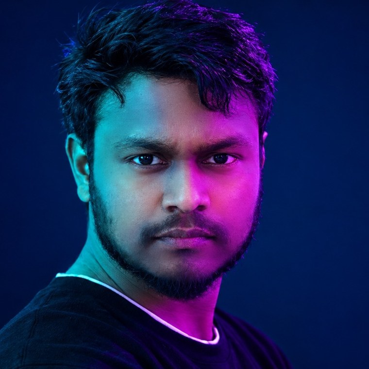
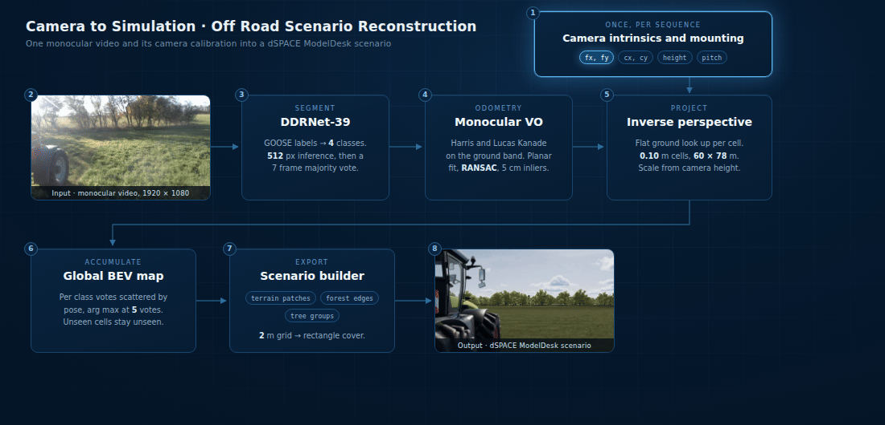
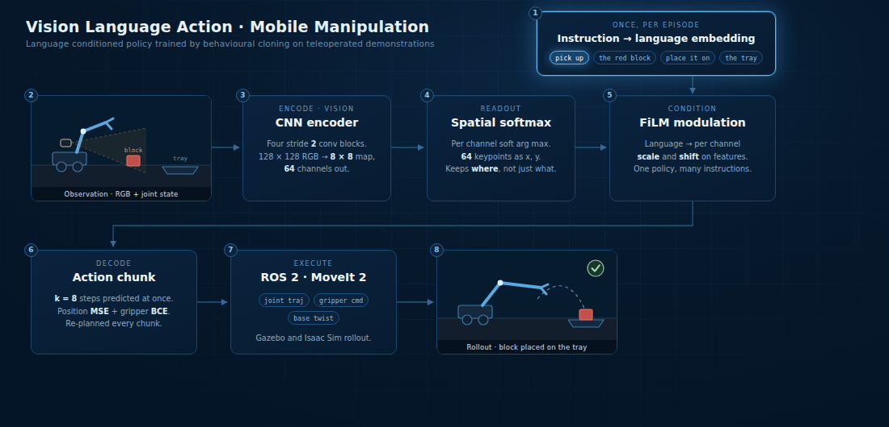
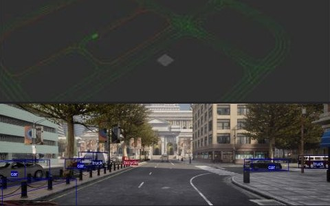
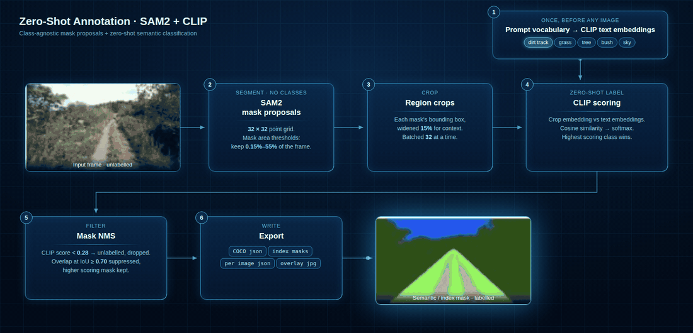
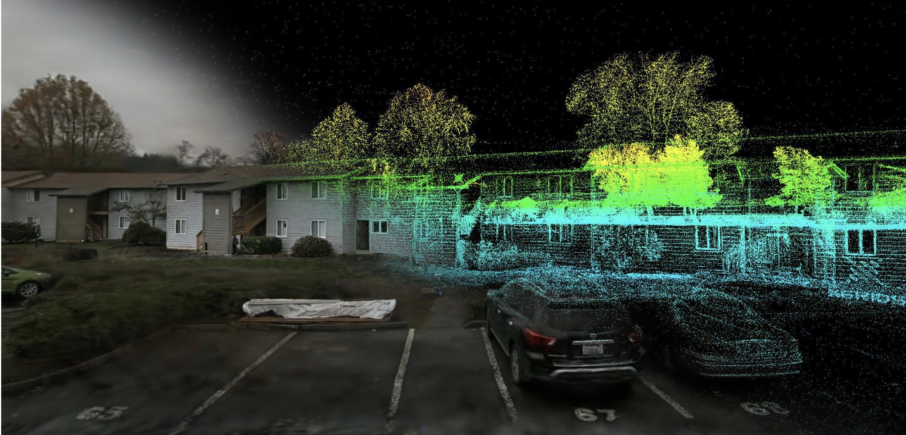

Shanmugaraja Pandiyan
I am an MSc graduate in Artificial Intelligence and Robotics working on machine learning and perception for autonomous systems, with three years of professional software engineering behind me at Bosch before I returned to study. I build perception pipelines end to end, from sensor calibration and data collection through model development to validation against reference measurements.
My experience spans off road and on road autonomy. My thesis at IAV developed perception for autonomous agricultural machines, and I have built and calibrated a complete mobile robot sensor stack of GPS, IMU, LiDAR and camera alongside earlier work on production vehicle software.

Research
My work sits at the intersection of perception, geometry and simulation. I care about minimum sensor results: how much of a scene you can rebuild from the cheapest instrument on the vehicle, and how much of the remaining error is calibration and timing rather than the model.
Monocular Semantic Scene Reconstruction for Autonomous Driving Re-Simulation in Off-Road Environments
M.Sc. thesis · IAV GmbH, Gifhorn, 2026

A pipeline that turns one forward facing camera into a simulation ready off road scenario. Each frame is segmented by a DDRNet-39 network over GOOSE labels, collapsed to four terrain classes and cleaned with a range aware ground prior, blob and hole filling and a seven frame majority vote. Monocular visual odometry tracks Harris corners through Lucas Kanade on a ground band and fits a planar three degree of freedom motion under RANSAC, taking its metric scale from the calibrated camera height and pitch rather than from a separate scale recovery step. Frames are projected through a flat ground inverse perspective lookup into a 0.10 m bird's eye grid and scattered into a global map as per class votes, so cells the camera never observed stay explicitly unobserved instead of being invented. The resolved map is fitted with an oriented two metre grid, covered by the smallest set of rectangles, and written out as ego centric terrain patches, forest edges and tree groups in a dSPACE ModelDesk scenario.
Along the way: a systematic 32 percent scale error traced back to a camera height recorded from the axle rather than the ground, a 6.7 second GNSS time offset that inflated apparent trajectory error by an order of magnitude, and a 32 bit latitude field in a J1939 message the documentation described as 31. Most of the accuracy came from calibration and timing discipline, not from the model.
Input footage in the pipeline figure is from the FieldSAFE dataset (Kragh et al., Sensors 17(11):2579, 2017), Aarhus University, used under CC BY‑NC‑SA 4.0.
Projects
Robotics and perception projects built end to end, from sensor integration and calibration through learned policies to closed loop control in simulation and on real hardware.
Vision Language Action Mobile Manipulation
Imitation learning · ROS 2 · NVIDIA Isaac Sim

A mobile manipulation robot that learns from teleoperated human demonstrations, mapping camera and joint state observations directly to actions rather than following hand written trajectories. I collected and curated demonstration data in Gazebo and Isaac Sim, implemented the ROS 2 nodes for trajectory execution and motion planning from the learned policy, and evaluated task success and error. The linked repository holds the policy implementation itself — FiLM conditioning, the spatial softmax readout, chunked actions and the ablations — trained and scored in a lightweight standalone simulator.
Autonomous Mobile Robot · GPS, IMU, LiDAR and Camera Integration
ROS 2 · personal project
Built an autonomous mobile robot from the platform up: mounting, wiring and integrating all four sensors on ROS 2, calibrating extrinsics and the TF2 frame tree, and time synchronising the streams. GNSS and IMU were fused for pose estimation and LiDAR combined with camera for obstacle perception, then validated as navigation behaviour on the real machine.
Autonomous Driving Perception and Control · CARLA + ROS 2
CARLA simulator · ROS bridge · personal project

Bridged CARLA with ROS 2 to process synchronised camera, LiDAR, IMU and odometry streams for real time perception, then closed the loop with longitudinal and lateral control across dynamic urban scenarios. Built from the ground up rather than from prebuilt tools: semantic segmentation for reliable lane marking detection, classical CV for lane extraction, lane centre and lateral error computed per frame, and a PID controller on steering, debugged through OpenCV views and RViz against the loaded road network. Alongside lane following I ran 3D object detection on the camera stream, bounding cars, trucks and bicycles in the scene. Model predictive control is the next step for curves and constraint handling.
Visual SLAM Pipeline in the Style of ORB-SLAM
Monocular SLAM · personal project
A foundational visual SLAM system implemented from first principles: FAST keypoint detection with ORB descriptors, non maximum suppression and adaptive thresholding for feature quality, brute force Hamming matching, essential matrix pose recovery with geometric verification, triangulation based sparse structure from motion, and frame to frame tracking with 2D track and 3D map visualisation. Tested on the KITTI outdoor dataset. Bundle adjustment, loop closure and learned detectors are the planned next steps.
Automated Annotation · SAM2 + CLIP
Foundation models · personal project

SAM2 proposes class agnostic masks and CLIP supplies the semantic label from a written vocabulary, so a new class costs a line of YAML rather than a labelling campaign. Crops below the score floor are left unlabelled instead of forced into the nearest class, and mask NMS drops the duplicates. Built to cut manual annotation effort and to test how far zero shot perception generalises across agricultural and driving scenes.
High Fidelity 3D Reconstruction · Gaussian Splatting and Photogrammetry
3D reconstruction · personal project

Ran a full structure from motion and 3D Gaussian splatting pipeline, covering COLMAP pose recovery, splat optimisation and holdout evaluation, to reconstruct real scenes into simulation ready 3D environments.
Technical Skills
- Languages
- Python, C++, C, Bash, SQL
- Machine learning
- PyTorch, TensorFlow, CNNs, Vision Transformers, object detection (YOLO), semantic and instance segmentation (UNet, DeepLab), behavioural cloning and imitation learning, transfer learning, fine tuning, hyperparameter optimisation, ablation studies, benchmarking
- Perception & sensor fusion
- OpenCV, camera intrinsic and extrinsic calibration, multi modal sensor calibration, LiDAR and camera fusion, GNSS and IMU fusion (EKF), multi sensor time synchronisation, depth estimation, optical flow, feature matching, multi view geometry
- SLAM & localisation
- Visual odometry, visual inertial odometry, visual SLAM, GPS and UTM pose estimation, map based localisation, trajectory benchmarking (ATE, RPE, Umeyama alignment)
- Environment modelling
- Occupancy grid mapping, bird's eye view mapping, inverse perspective mapping, freespace and terrain analysis, point cloud processing (Open3D, PyTorch3D), 3D reconstruction (COLMAP, structure from motion, 3D Gaussian splatting), mesh reconstruction
- Robotics & planning
- ROS 2 (Humble, Galactic, Jazzy), TF2, Nav2, MoveIt 2, RViz, Foxglove, motion planning (A*, RRT*), PID and behaviour based control, Gazebo, NVIDIA Isaac Sim, CARLA
- Embedded & real time
- Production embedded C on automotive ECUs, real time systems, AUTOSAR COM and DIAG stacks, CAN, deterministic timing, tight memory budgets, hardware and software in the loop benches
- Tooling & process
- Linux, Git, GitLab, CI/CD, Docker, CMake, Azure DevOps, JIRA, DOORS, agile and SCRUM, automotive functional safety process
- Foundation models
- CLIP, SAM2, DINO, vision language models, vision language action models, zero shot perception, automated annotation